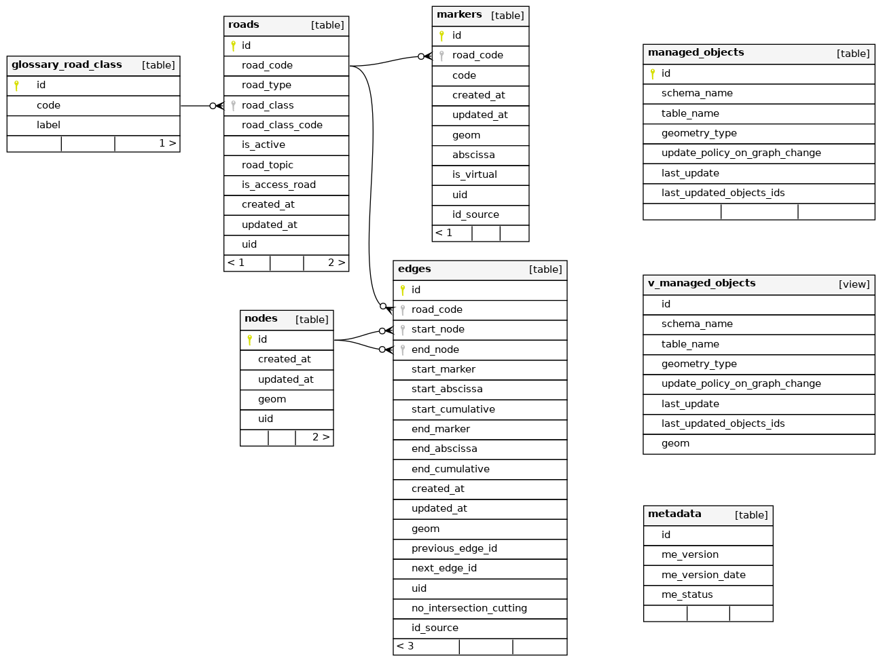

Tables and fields#
The plugin stores the road graph in the PostgreSQL schema road_graph.
The schema road_graph_editing has the same tables: it is the sandbox of the
editing sessions.
This page describes the fields of the main tables. For the technical details (types, constraints, indexes, functions, etc.), see the Database structure.

The created_at and updated_at fields of the tables are filled automatically,
and the uid fields contain a unique identifier (UUID) generated automatically.
roads#
The list of the roads. This table has no geometry: the geometry of a road is made of its edges.
| Field | Type | Description |
|---|---|---|
id |
integer | Unique identifier (automatic) |
road_code |
text | Code of the road, e.g. D613. Unique. Used by the edges and the markers to refer to the road. |
road_type |
text | road or roundabout. The roundabouts are managed differently by the trigger functions (see Create a roundabout). |
road_class |
text | Class of the road: Départementale, Nationale, Autoroute, etc. It must exist in the table glossary_road_class. |
road_class_code |
text | Code of the road class, e.g. the code of the French department |
is_active |
boolean | If the road is active |
road_topic |
text | Optional topic of the road, e.g. Port |
is_access_road |
boolean | If the road is an access road |
edges#
The edges of the road graph: each edge is a portion of a road between two nodes, drawn in the direction of the road.
| Field | Type | Description |
|---|---|---|
id |
integer | Unique identifier (automatic) |
road_code |
text | Code of the road of the edge |
geom |
LineString | Geometry of the edge. Its coordinates are rounded to 10 cm, except for the roundabouts. |
start_node |
integer | Identifier of the start node (upstream node), filled automatically |
end_node |
integer | Identifier of the end node (downstream node), filled automatically |
previous_edge_id |
integer | Identifier of the previous edge of the same road, filled automatically if an edge of the same road ends at the start node. Empty for the first edge of the road. |
next_edge_id |
integer | Identifier of the next edge of the same road. Empty for the last edge of the road. |
start_marker |
integer | Code of the marker before the start point of the edge |
start_abscissa |
real | Distance in meters between this marker and the start point |
start_cumulative |
real | Cumulative distance in meters from the start of the road to the start point |
end_marker |
integer | Code of the marker before the end point of the edge |
end_abscissa |
real | Distance in meters between this marker and the end point |
end_cumulative |
real | Cumulative distance in meters from the start of the road to the end point |
no_intersection_cutting |
boolean | If True, the edge is not cut automatically at its intersections with the other edges, for example a bridge (see Edges which must not be cut). Default: False. |
id_source |
text | Identifier of the edge in the source data, after an import |
The references of the edges (start_marker, start_abscissa, start_cumulative, end_marker,
end_abscissa and end_cumulative) are calculated automatically by the trigger functions
each time an edge or a marker of the road is modified.
nodes#
The nodes of the road graph: the start and end points of the edges, and the intersections between the edges.
| Field | Type | Description |
|---|---|---|
id |
integer | Unique identifier (automatic) |
geom |
Point | Geometry of the node. Two nodes cannot have the same geometry. |
The nodes are created and deleted automatically by the trigger functions when the edges are edited. Creating or moving a node on an edge splits this edge.
markers#
The markers (reference points, PR in French) positioned along the roads.
| Field | Type | Description |
|---|---|---|
id |
integer | Unique identifier (automatic) |
road_code |
text | Code of the road of the marker |
code |
integer | Code of the marker, e.g. 12 for PR 12. Positive. |
abscissa |
real | Abscissa of the marker in meters. 0 for a real marker, and the distance from the marker of the same code for a virtual marker, e.g. 613 for PR 72 + 613m. Positive. |
is_virtual |
boolean | True for a virtual marker (PRV), created to make the administration of the graph easier |
geom |
Point | Geometry of the marker |
id_source |
text | Identifier of the marker in the source data, after an import |
A road cannot have two markers with the same code and abscissa.
A marker 0 is created automatically at the start of a new road, except for the roundabouts.
glossary_road_class#
The list of the road classes used by the field road_class of the table roads.
| Field | Type | Description |
|---|---|---|
id |
integer | Unique identifier (automatic) |
code |
text | Code of the class, e.g. Départementale. Unique. |
label |
text | Label of the class. Unique. |
editing_sessions#
The editing sessions: the areas in which the road graph is edited in the sandbox (see Road graph editing).
| Field | Type | Description |
|---|---|---|
id |
integer | Unique identifier (automatic) |
label |
text | Short label of the session |
author |
text | Author of the session |
description |
text | Description of the session |
geom |
Polygon | Area of the session. It cannot be modified once the data has been cloned. |
status |
text | Status of the session: created, cloned, edited |
unique_code |
text | Code generated automatically with the creation date, e.g. editing_session_2026_10_28_08_37_24 |
cloned_ids |
jsonb | Identifiers of the objects copied into the sandbox (roads, edges, nodes, markers) |
logged_ids |
jsonb | Identifiers of the objects created, updated or deleted in the sandbox, used to merge the session |
managed_objects#
The list of the business tables based on the road graph (see Managed objects).
| Field | Type | Description |
|---|---|---|
id |
integer | Unique identifier (automatic) |
schema_name |
text | Schema of the business table |
table_name |
text | Name of the business table. A table can be registered only once. |
geometry_type |
text | Geometry type of the table: POINT, LINESTRING or MULTILINESTRING |
update_policy_on_graph_change |
text | Update rule when the road graph changes: references (the geometry is kept and the references are updated) or geometry (the references are kept and the geometry is updated) |
add_trigger_on_geom_change |
boolean | If True, the function road_graph.add_managed_objects_triggers() creates on the table the trigger calculating the references automatically. Default: False. |
last_update |
timestamp | Date of the last update of the objects of the table |
last_updated_objects_ids |
integer[] | Identifiers of the objects updated by the last update |
metadata#
The version of the database structure, used by the plugin to know which upgrades must be run.
| Field | Type | Description |
|---|---|---|
me_version |
text | Version of the database structure |
me_version_date |
date | Date of the version |
me_status |
integer | Status of the version |
Views#
| View | Description |
|---|---|
v_road_without_zero_marker |
The roads which do not have a marker 0 |
v_managed_objects |
The objects of the business tables updated by the last merge of an editing session, as a 10 m buffer |
vm_managed_objects |
Materialized view of v_managed_objects, refreshed at the end of each merge (see Last updated objects) |